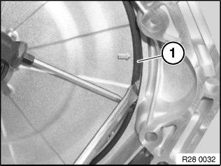
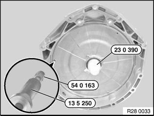
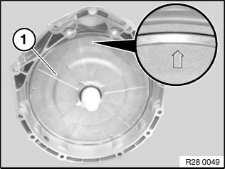

28 40 000 Removing and Installing or Replacing Clutch Cover (GS7D36SG)
28 40 000 Removing and installing or replacing clutch cover (GS7D36SG)Special tools required:
Important!
It is essential to adhere to conditions of absolute cleanliness.
Any dirty parts must be cleaned before removing the clutch cover.
After completion of work, check transmission oil level.
Use only the approved transmission oil.
Failure to comply with this instruction will result in serious damage to the twin-clutch gearbox.
Important!
Read and comply with notes on protection against electrostatic discharge (ESD protection).
Installation note:
- Removal and installation of clutch cover:
Replace radial shaft seal, O-ring and snap ring.
- Replacement clutch cover:
Replace as a single assembly only (incl. radial shaft seal, O-ring, bearing, retaining plate and snap ring).
Necessary preliminary work:
^ Remove twin-clutch gearbox
To prevent the gearbox oil from spilling out, tilt the gearbox back before removing the clutch cover.
Installation note:
After completing work, add transmission oil and check transmission oil level.

Lever snap ring (1) out of housing with a suitable tool.
Installation note:
Replace snap ring.

Graphic shows: Twin-clutch gearbox S65
Slip bush 23 0 390 must be used when clutch cover is removed and installed.
Pull clutch cover with special tool 13 5 250 and adapter 54 0 163 out of housing.
Important!
Ensure uniform (non-tilting) detachment by alternately using the 3 tightening threads.

Graphic shows: Twin-clutch gearbox S65
Remove oil fouling with fluff-free cloth.
Clean snap ring groove before installing clutch cover.
Press clutch cover (1) into housing with arrow pointing up and strike evenly with a plastic hammer.
Then secure clutch cover with snap ring.
Make sure snap ring is correctly fitted.
Installation note:
Moisten O-ring and radial shaft seal with gearbox oil.